Project 01 of 06 Stallion Motorsport Electric, 2022 to 2023
FSAE drivetrain: dual motor transmission and limited slip differential
I designed all the primary mechanical components of an electric Formula Student car in Siemens NX, from concept to production. The drivetrain has two electric motors, a chain drive to the rear wheels and a custom limited slip differential built into the driven sprocket.
What the drivetrain does
Two electric motors give a combined 136 Nm at 3751 rpm. They drive the rear wheels through a chain. With a final drive ratio of 3.87, the torque at the wheel is 526 Nm.
The limited slip differential
I designed a custom limited slip differential and integrated it with the driven sprocket. My two priorities were reliability and low weight. The differential's torque distribution contributed to winning the skidpad event.
I also designed a spool differential as an alternative.
Parts I designed
In the transmission I designed:
- Motor mount
- Scatter shield
- Differential mount
- Titanium shaft
- Motor coupler
- Chain tensioner
- Tripod joint
- Limited slip differential
Fault finding: gearbox overheating
A gearbox overheated during testing and I led the investigation. I used thermal data to find the root cause, redesigned the part and revalidated it on track. The fault did not come back before competition.
Result
The car finished All India Rank 1 at Formula Bharat 2023, after a 532 km validation test campaign. The year before it finished Rank 8.
Transmission

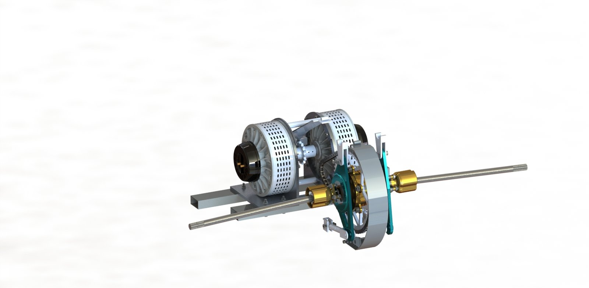
Limited slip differential

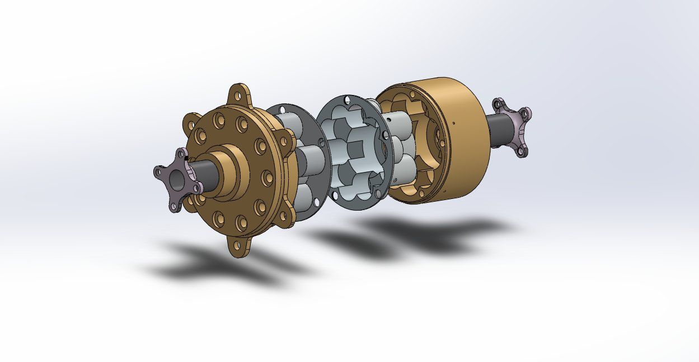

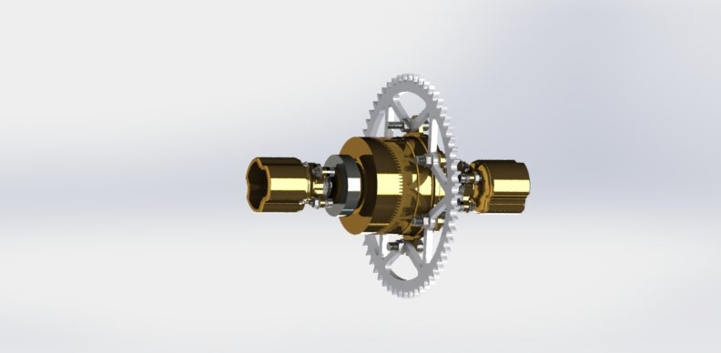

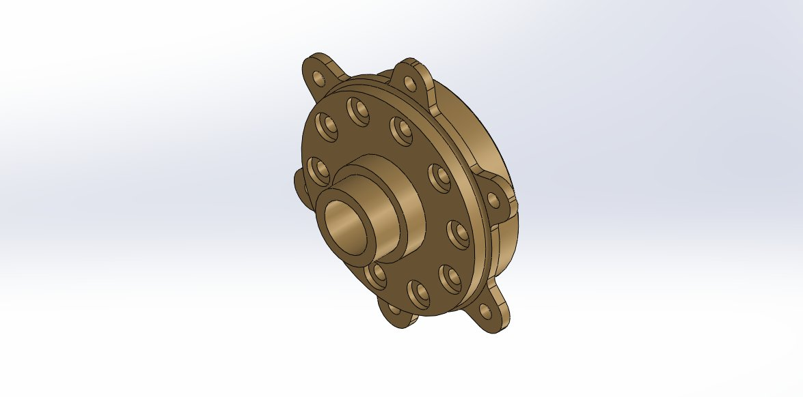

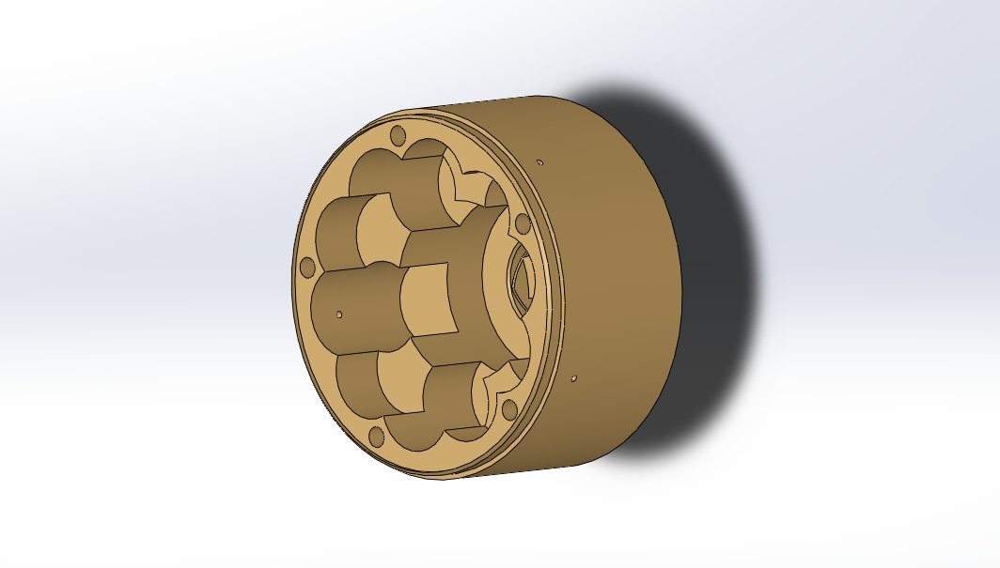

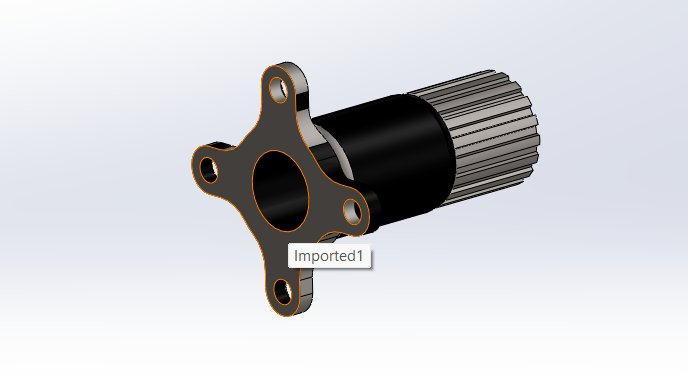

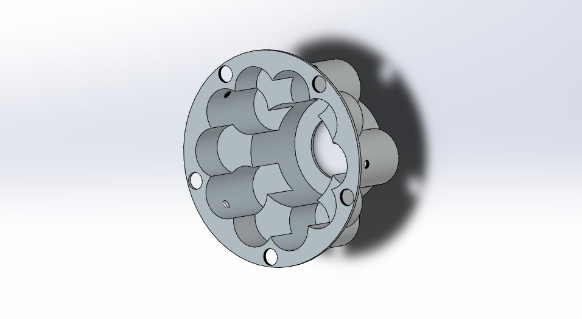


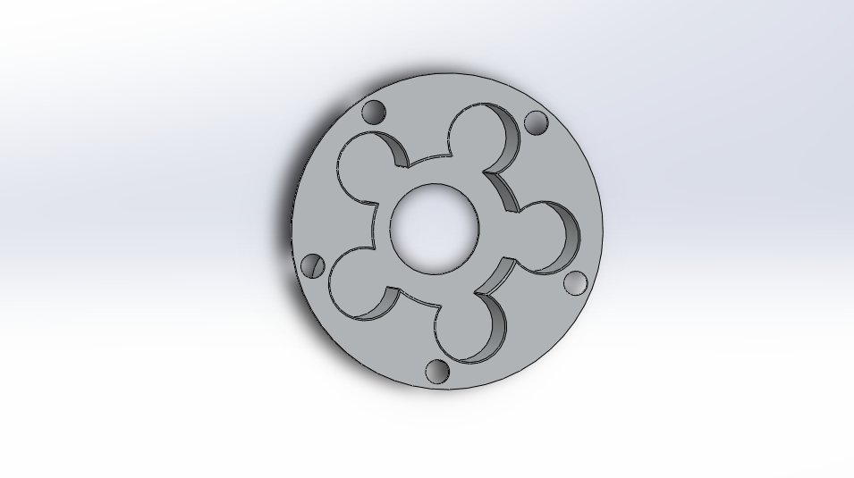
Spool differential (the alternative)

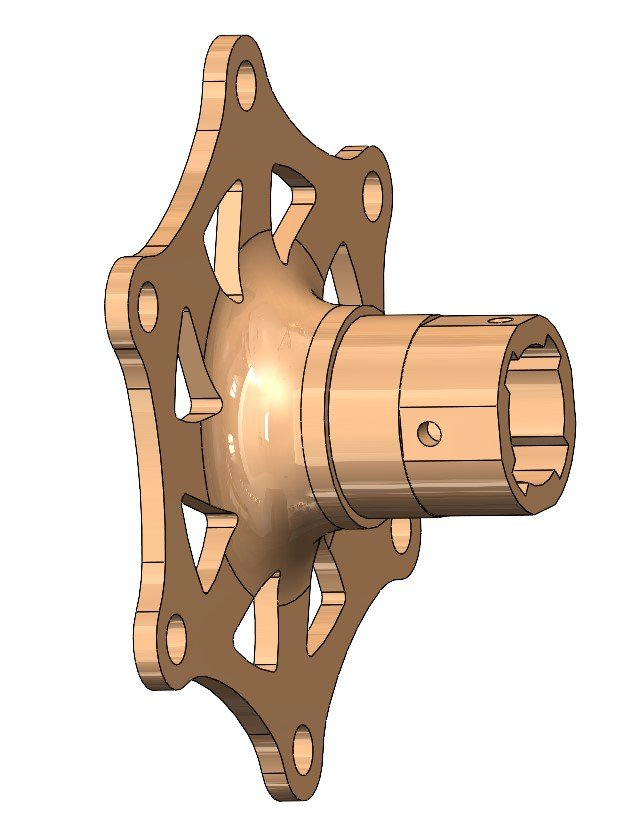

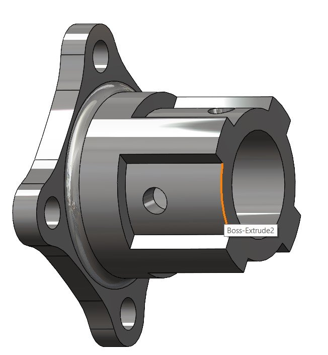

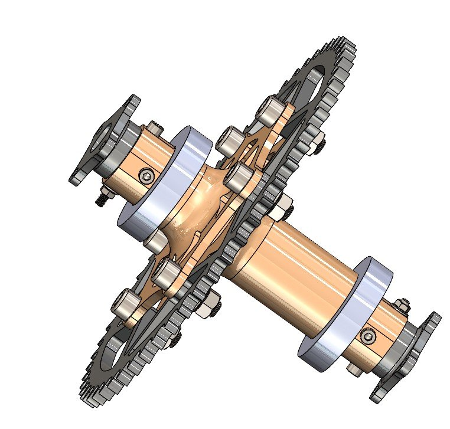

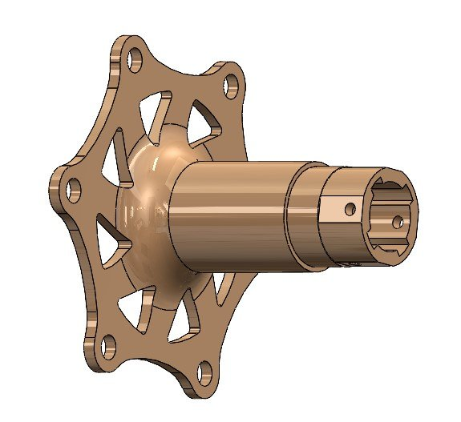